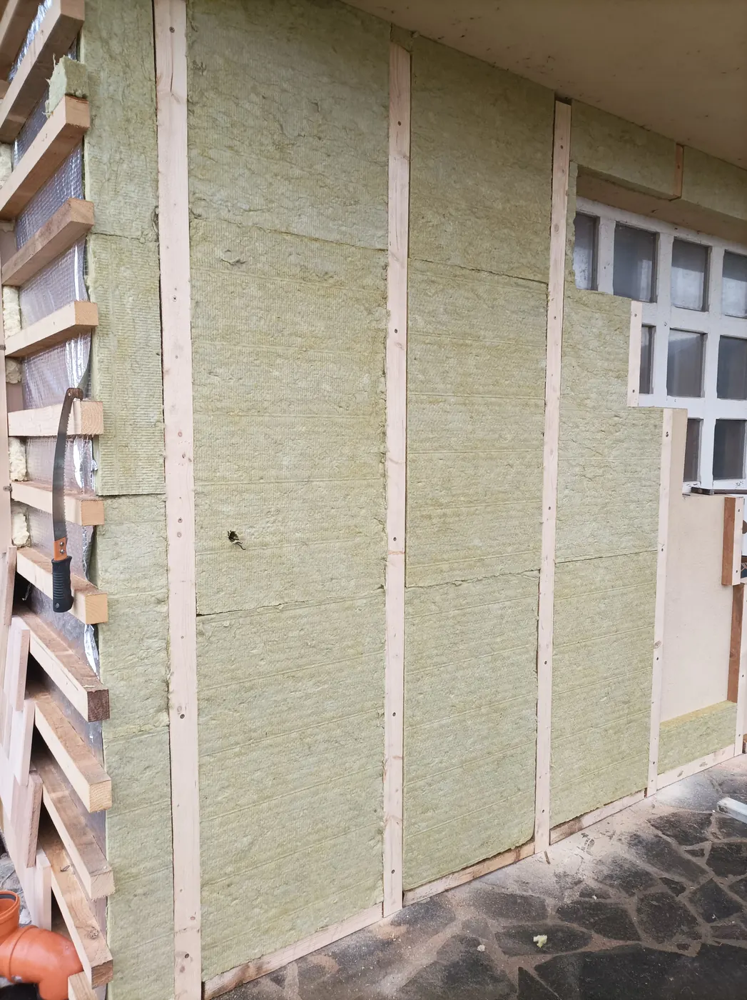

01
Zvislé latovanie
- Príprava materiálu: Použite suché a impregnované smrekové laty s rozmerom 5×5 cm a potrebnou dĺžkou.
- Zrovnanie steny: Rovnomerne umiestnite laty na stenu v pravidelných intervaloch približne 60 cm.
- Upevnenie: Na upevnenie lát na stenu použite hmoždinky s priemerom 12 mm a skrutky veľkosti 6×120–140 mm.
- Izolácia: Medzi laty vložte minerálnu vatu hrúbky 5 cm.
- Rozšírenie pre vyššiu izoláciu: Ak sú potrebné vyššie izolačné nároky, pridajte ďalšie laty na existujúce, čím vytvoríte medzeru hrúbky 10 cm, a vyplňte ju minerálnou vatou.
- Zabezpečenie spodku: Na spodok pridajte zarážky, aby sa dosky minerálnej vaty nezosunuli.
